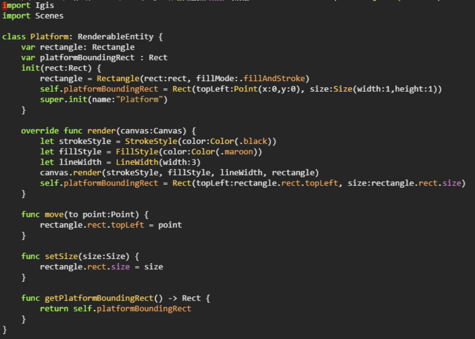
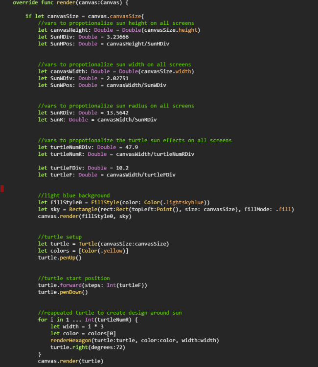
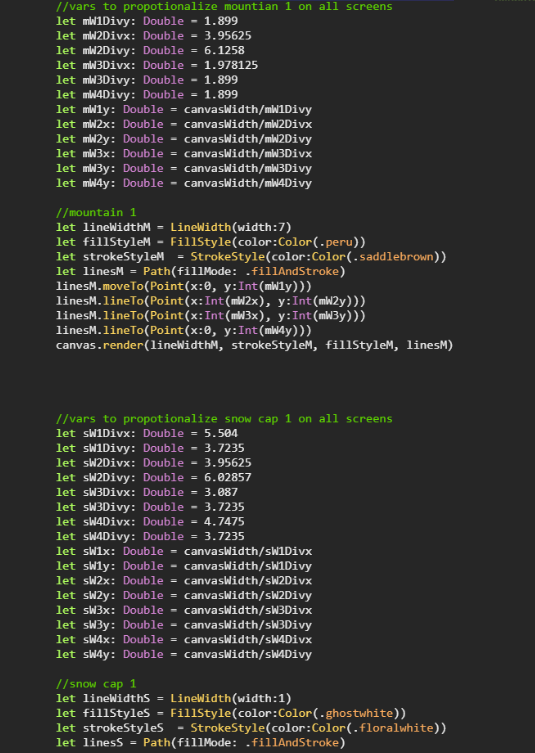

The concept of my ISP from last year was a platformer style game. A platformer game is a 2D game where a character has to move around and jump from platform to platfrom to get to the finish and complete the level.
The motivation for making a platformer game was looking back on what games I had fun playing when I was younger and immediately Mario came to mind. Making a game similar to Mario seemed like it would be a fun project as well as being simple enough to finish in the time given.
This code shows how the character switches between frames to make it look like the character is running, how the character jumps, and the characters boundingRect/hitbox.
This segment of code is for the platforms used in the game. In the code the platform is made as a black rectangle with a boundingRect/hitbox
 These code snapshots show how the background of the game was created. There are lots of varibles being used to make everthing on the game proportional to the canvas size aka the screen size so that the game would look proper on all diffiernt screens. The code is also being used to draw the 3 mountains and the sun as the background.
When coding this ISP almost nothing went as expected. There would always be some kind of error with the game being proportional to the canvas size of the hitboxes of the character, platforms, and lava not interacting as they should. In the end we were able to fix the issues one at a time and the project turned out pretty good and it was working well by the time presentation day came around.